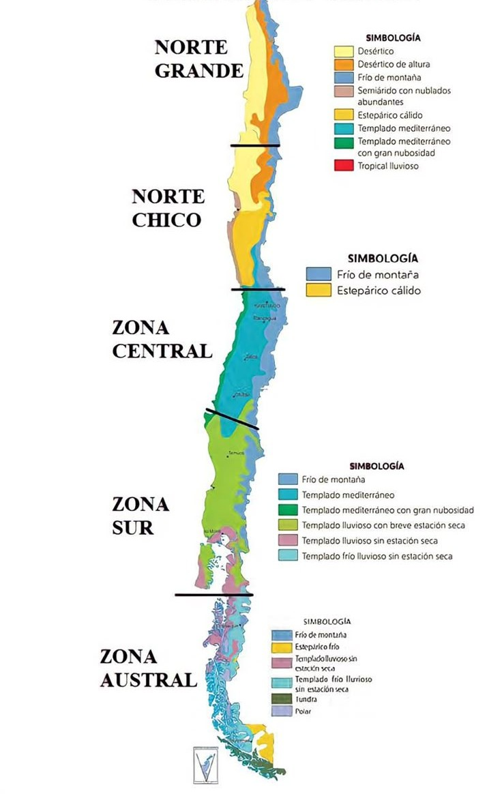

Esta Web Muestra el clima en algunas ciudades de chile y aparte una pequeña descripcion de los distintos tipos de climas.
Clima Árido: se extiende desde Arica a La Serena, se caracteriza por recibir una alta radiación solar con una T° de 18°C, aire extremadamente seco y casi total ausencia de precipitaciones. Esto impide el desarrollo de vegetación y por lo tanto determina un paisaje desértico.
Clima Semi Árido: conocido como clima de Estepa seca, entre La Serena y el norte de Santiago, caracterizado por presencia de precipitaciones ocasionales y una temperatura media más baja que la anterior. Permiten la existencia de formaciones vegetales de tipo xerófilo (adaptados a la aridez) y vegetación esclerófila (hojas duras y espinas).
Clima Templado: es el más extendido a lo largo de Chile, con condiciones óptimas para el desarrollo de alta diversidad de formaciones vegetales. Sus variaciones se dividen en tres: Clima Templado Mediterráneo (desde el Valle del Maipo a Concepción), con la presencia de bosque esclerófilo en la zona central; Templado lluvioso (de Concepción a Puerto Montt); y Templado Marítimo (desde Puerto Montt a Coyhaique).
Clima Frío: entre Coyhaique y Punta Arenas, caracterizado por una reducción de las precipitaciones (350 mm) y T° medias de 4 y 5º C, con fuertes vientos que condicionan la presencia de bosques subantárticos de lenga y estepa o pampa patagónica.